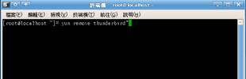
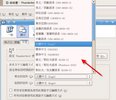

COSA活動記錄簿
留下COSA所辦活動之紀錄
首頁
相簿目錄
::
最新上傳
::
最新留言
::
熱門圖片
::
最高評分
最高評分
99 次觀看
(9 個評分)

95 次觀看
(9 個評分)

107 次觀看
(9 個評分)
110 次觀看
(9 個評分)
許理事長致詞
132 次觀看
(9 個評分)
297 次觀看
(9 個評分)
237 次觀看
(9 個評分)
IBM展場-3
144 次觀看
(13 個評分)
762 次觀看
(12 個評分)
226 次觀看
(8 個評分)
162 次觀看
(6 個評分)
150 次觀看
(6 個評分)
752 張圖片，共 63 頁
1
2
3
4
5
6
7
8
9
10
11
63